第21章
最后一粒钻石粉末
大约在250年以前，经济学家亚当·斯密提出了一个小孩子也会问的问题：为什么钻石比水贵这么多？1
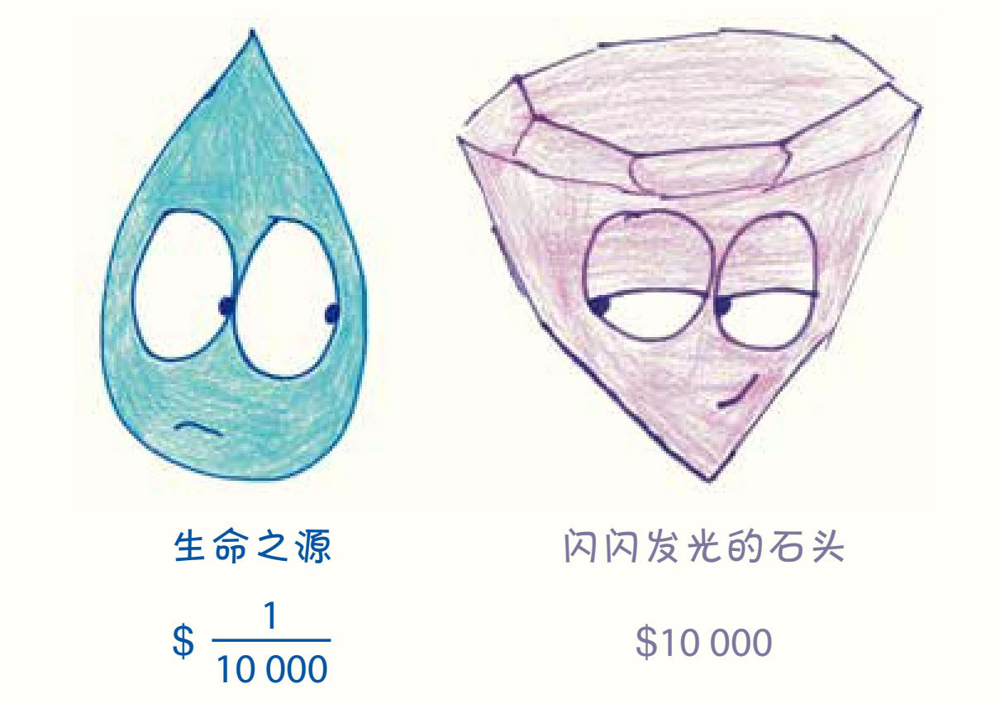
他用100个单词来陈述这个问题，然后又用13 000个单词提出了一个价格理论。然而，直到最后，他仍然没有找到答案。如果把自己当作一个刚到地球的外星人，你也会发现这真是个谜。哪个愚蠢的星球会把赋予我们生命的水的价值看得比只有装饰作用的“硬碳块”还低呢？实用性和价格之间真的没有任何联系吗？难道人类已经不讲逻辑到这样无可救药的地步了吗？
对这些问题的探讨改变了经济学。学者们的这段旅程以道德哲学家的精神开始，以数学家无情的严谨结束，他们终究还是通过数学找到了答案。想知道为什么闪亮的石头会比让我们的肾脏功能正常的饮品价格更高吗？
答案很简单，给你一个提示：边际效用。
1. 里昂·瓦尔拉斯说，是时候解决那些问题了
从18世纪70年代到19世纪70年代，古典经济学的流行持续了整整一个世纪2，在那个世纪里，杰出的头脑为人类的理解开疆拓土，打开了新世界的大门。但我不是来歌颂古典经济学的，我是来取笑它的。古典经济学家致力于证明“劳动价值论”，而这一观点在现代人眼中错漏百出。
这个理论认为，商品的价格是由制造它所需要的劳动时间决定的。
为了先梳理出这个假设，让我们回到人们以狩猎采集为生的原始社会。在原始社会，猎杀一头鹿需要6个小时，采集一篮浆果需要3个小时。根据劳动价值论，成本将取决于一个因素——不是稀缺度、美味度或当前的饮食潮流，而是所需的劳动时间。得到一头鹿需要的时间是一篮浆果的两倍，所以鹿的价格是浆果的两倍。
当然，劳动本身并不是唯一的投入。如果猎鹿需要花哨的长矛（制作时间为4小时），而采浆果只需要一个普通的篮子（制作时间为1小时），那该怎么办呢？我们就把它们加起来：一只鹿总共需要6+4=10个小时的劳动，而一篮浆果只需要3+1=4个小时的劳动，所以一只鹿的交易价格应该是浆果的2.5倍。包括对工人的培训在内，所有的投入都可以进行类似的调整。
在这个理论下，一切都应该换算成劳动，劳动就是一切。
在这种经济学理论中，“供给方”决定价格，而“需求方”决定销量。这个逻辑看起来好像没有什么不对。当我去超市买鹿肉或者去商场买iPad时，决定价格的不是我，而是卖家，我唯一能做的决定是买还是不买。
嗯，这个理论看上去似乎很吸引人，也很直观。但是，根据当今最优秀的专家的说法，这是完全错误的。
19世纪70年代，经济学经历了井喷式的发展。那些来自欧洲各国的散漫自由的思想家在思考前辈的成功和奋斗时，开始觉得含糊的思考不够用了。他们试图为经济学找到更坚实的基础，这些基础包括个体心理学、谨慎的经验主义，最重要的是——严谨的数学。
尽管这些新一代的经济学家正在努力解决离散与连续的问题，可事实上，我们在买东西时，是按离散的量购买的，比如说，我购买钻石的数量可以是一颗或两颗，但不能是一或二中间的任何一个数值。
这对经济学来说不是什么好事。因为从数学上来讲，处理那些呈现跨越式变化的量要比处理那些呈现平稳、持续变化的量要困难得多。为了降低分析的难度，这些新经济学家假设，我们可以购买任何数量的产品，也就是数量之间可以有无穷小的间隔。这样，一颗颗钻石变成了一粒粒极微小的钻石粉末。当然，这是一种简化的方式：不符合真正的事实，但非常有用。
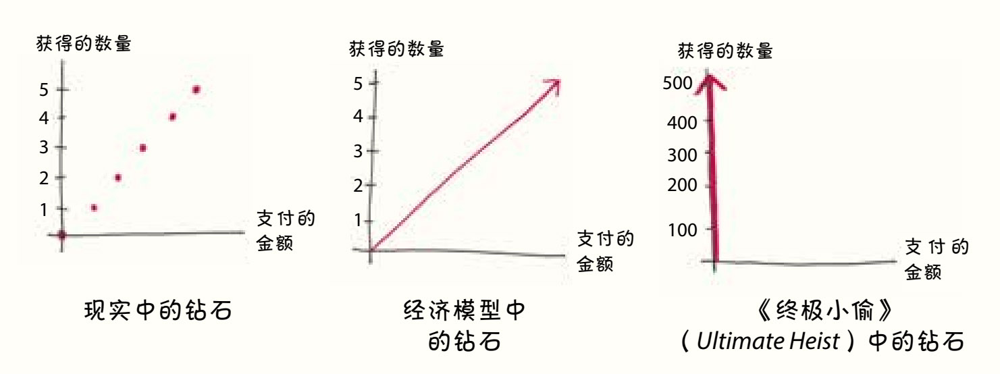
这开启了一种全新的分析模式：经济学家开始思考商品的边际效用。问题不再是“一篮浆果的平均价值是多少”，而是“如果再增加一篮浆果，它的价值是多少”，或者更好的是问“如果再增加一颗浆果，它的价值是多少”。这是现代经济学的开端，现在被称为“边际革命”。
边际革命的领军人物包括威廉·斯坦利·杰文斯、卡尔·门格尔，以及一位当时看起来不太可能成为英雄的人物——里昂·瓦尔拉斯。在获得“有史以来最伟大的经济学家”的头衔之前，他的身份五花八门：工程学学生、记者、铁路职员、银行经理，还有浪漫主义小说家。而在1858年的一个夏夜，他和父亲去散步，这是一个命运的转折点。当晚，在老瓦尔拉斯苦口婆心的劝说下，里昂决定浪子回头，专注在经济学的研究上。
古典经济学家解决了很多关乎市场和社会本质的重大问题，而边际效用学派则将焦点缩小到在边际上做出微小决定的个人。瓦尔拉斯的目标是将这两个层次的分析统一起来，以微小的数学步骤为基础，建立整个经济的宏观视野。
①由于瓦尔拉斯（Walras）的拼写与读音和“海象”（walrus）相似，作者在这里用海象代表了他的形象。
2. 谈谈松饼、农场、咖啡商店和被轻轻施压的弹簧
又到角色扮演的时间了！你抽中的角色是个农民。
作为农民，你恐怕很快会发现，耕种的土地越多，新耕种的那一亩土地就越贫瘠。
每一块土地都是不一样的。当你开始耕种时，你会先挑选那片最肥沃、最成熟的土壤；因为你已经把最好的那些土地用尽了，所以每一亩新土地的收成都会比以前的略低。直到最后，在你眼前就只剩下一片寸草不生的石头地。
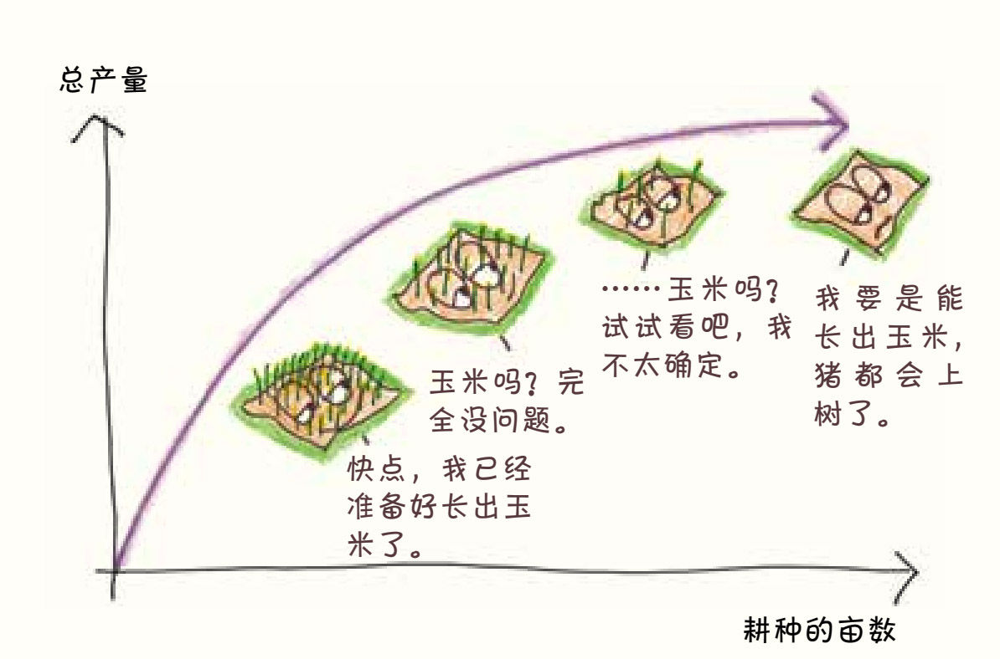
人类的这一发现远远早于边际效用理论。3一位古典经济学家曾做过一个机械的类比4：
土地的生产力就像一个弹簧，如果我们往弹簧上不停地放砝码，弹簧会不断地被压缩，在被下压到一定的程度后，再将从前可以将弹簧下压一寸的砝码放在弹簧上，弹簧却纹丝不动了。
边际效用理论的突破来自将同样的概念从农业延伸到人类心理学。看看我吃玉米松饼的过程就知道了：
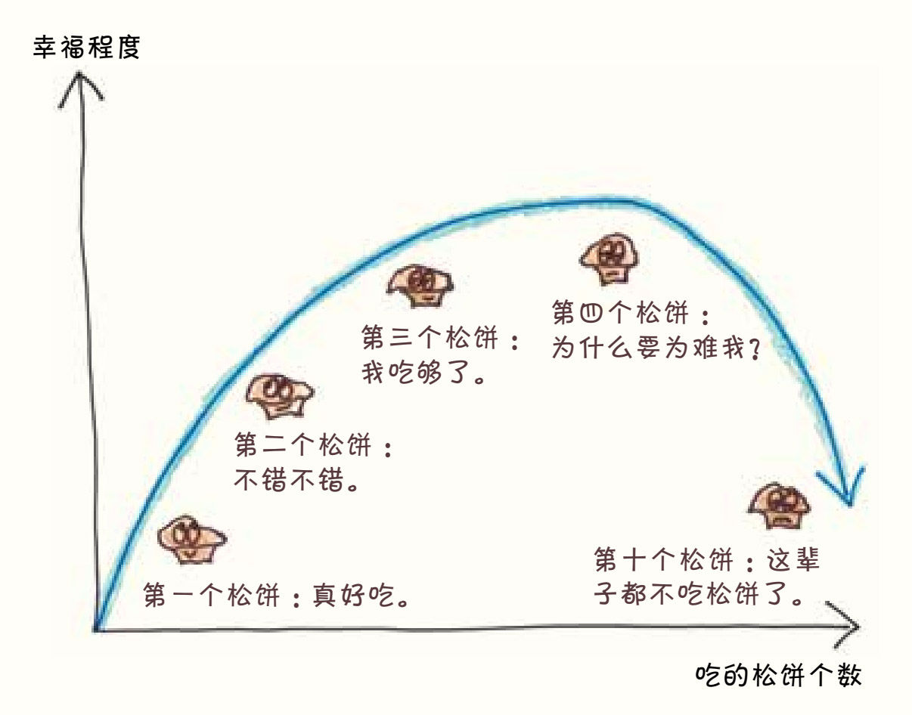
也许所有的松饼都生而平等，但我吃松饼时的感觉却不是这样。我吃得越多，每咬一口就越不开心。不久后，它们就不再让我感到满足，而让我开始觉得恶心。
食物不是特例。同样的道理适用于所有消费品：围巾、SUV，甚至库尔特·冯内古特的小说。无论是它们之中的哪一个，得到第十件相同的物品时，你幸福感的增加值不可能和得到第一件时一样多。每件物品带来的幸福感都取决于你已经有了多少件。今天，经济学家们将其称为“边际效用递减定律”，尽管我更愿意称之为“我没有真正享受《冠军早餐》（Breakfast of Champions）(11)的原因”。
递减的速度有多快呢？不同的物品是不一样的。正如著名的边际学派经济学家威廉姆·斯坦利·杰文斯所写的：
边际效用函数对不同物品来说千差万别。比如说，人们对干面包的渴望是很容易满足的，但对葡萄酒、衣服、漂亮的家具、艺术品，甚至是金钱的欲望就没那么容易满足了。每个人都有某些特别渴望的东西，在自己渴望的东西面前，会变得贪得无厌、永不知足。5
这篇文章除了介绍了许多关于威廉姆·斯坦利·杰文斯的情况外，还指向了一种新的经济需求理论——人们做出决定的依据就是边际效用。
假设在我们的经济社会中，只有两种商品：松饼和咖啡。我该如何分配开支呢？在决定花出每一美元之前，我都问自己同样的问题：花在哪儿能更好地提升我的幸福感呢？是花在买松饼上还是花在买咖啡上呢？即使是像我这样的松饼痴迷者，最终也会更喜欢第一杯咖啡而不是第十一块松饼；即使是一个对咖啡因上瘾的经济学家，最终也会更喜欢第一块松饼而不是第十一杯咖啡。
这个逻辑可以归结为一个简单的原则：在一个完美的预算中，花在每一件商品上的最后1美元将产生完全相同的效益。
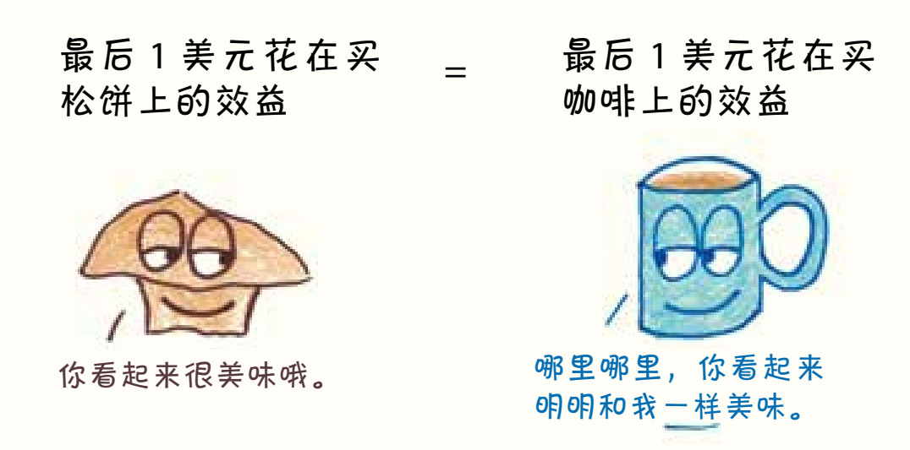
瓦尔拉斯的这一见解为经济学打下了一个全新的、更符合心理学的根基。正如杰文斯所写：“一个真正的经济理论只能通过追溯人类活动的伟大源泉——快乐和痛苦的感觉来获得。”6学者们第一次认识到，“经济”不仅包括有形的交易账簿，还包括无形的偏好和欲望。
此外，边际效用学派还认为卖家的边际效用函数与消费者的类似。举个例子，假设你现在是一家咖啡店的老板，你应该雇用多少人？
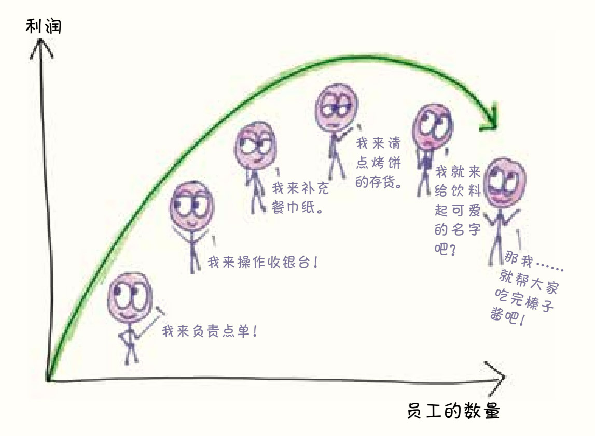
随着生意的扩张，你从每位新员工身上得到的好处越来越少。最终，你发现增加一个工人的成本会超过他所带来的利润。在那个时候，你就会停止招聘。
这种逻辑有助于平衡咖啡店的各种投入。比如，一口气买了12台咖啡机却没有招聘足够的员工来做咖啡，或者明明咖啡豆存货不足还把钱先投入广告，这都是吃力不讨好的。如何在这些投入之间合理地协调我们的预算呢？方法很简单：坚持购买，直到你在每项投入上花费的最后1美元只能为你增加1美元的额外利润。如果花的钱比这个数少，你就会错过潜在的利润；如果再多花一些钱，你的利润就会减少。
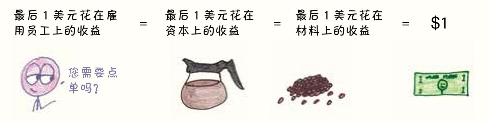
在学校里，我学到了经济学在消费者和生产者之间具有镜像对称性。7消费者购买商品的目的是使效用最大化，而生产者购买生产资料的目的是使利润最大化。每个人都在不停地购买，直到下一件商品的边际效益不再与成本相称。对于这个整齐的并行框架，我们得感谢（或者责怪，取决于你对资本主义的看法）边际效用学派。
3. 为什么钻石这么贵，水却那么便宜？
古老的劳动价格理论其实也对了一半。毕竟，从矿里开采钻石比从井里取水要耗费更多的劳动力。尽管如此，仍有一个关键问题没有得到解答：为什么会有人愿意用一大笔钱来换取少量的碳呢？
把自己想象成一个有钱人（也许你经常这么做），你已经有了足够多的水，足以让你痛快地洗澡、给矮牵牛花浇水、维护后院的水上乐园。当我把价值1 000美元的水放在你面前时，你会觉得那么多水一文不值。
但是价值1 000美元的钻石呢？它对你来说既新奇又闪亮，就像吃了11块松饼后喝的第一杯咖啡。
事实上，富人们聚在一起时，这种心态有过之而无不及。市面上在售的第一颗钻石将以荒谬的价格被一位狂热的买家收入囊中（比如100 000美元）；第二颗钻石会找到一位稍微不那么热心的买家（99 500美元）。当那些最狂热的买家都已经买过了钻石后，你就必须降低价格。市场上的钻石越多，最后一颗钻石的效用就越低。
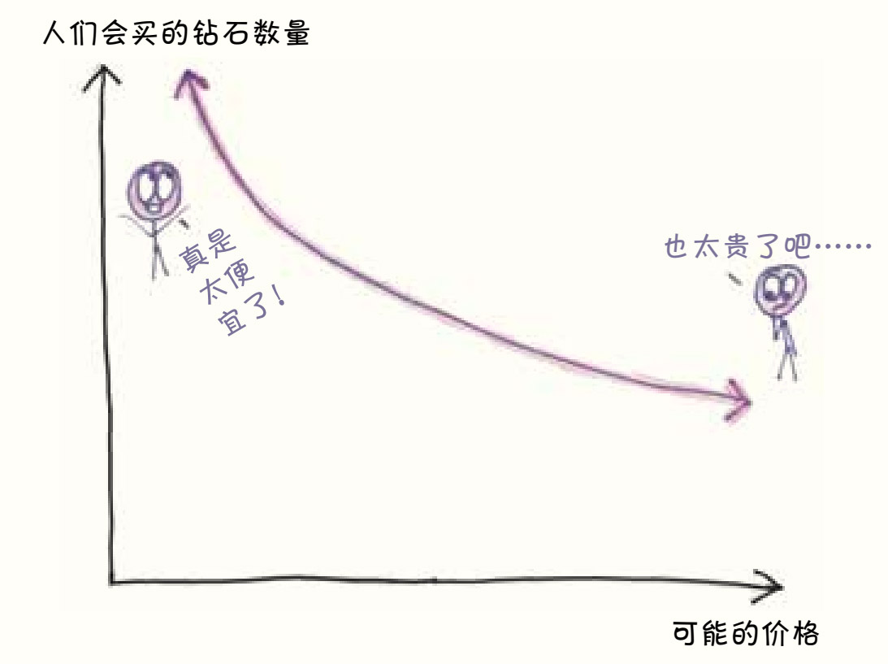
从供应方的角度来看，也有一个平行的原则。如果第一颗钻石的开采价为500美元，那么下一颗钻石的开采价将为502美元，以此类推，每多开采一颗钻石，开采成本就会增加一点儿。
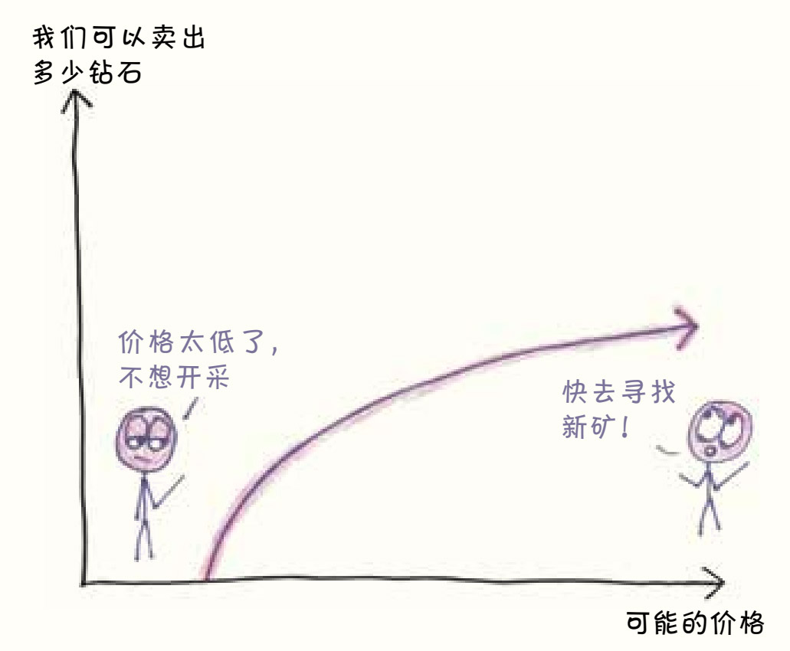
随着市场的增长，这些数字会趋于一致：供应成本一点一点地增加，消费的效用一点一点地下降。最终，它们在一个叫作“市场均衡价格”的点相遇。
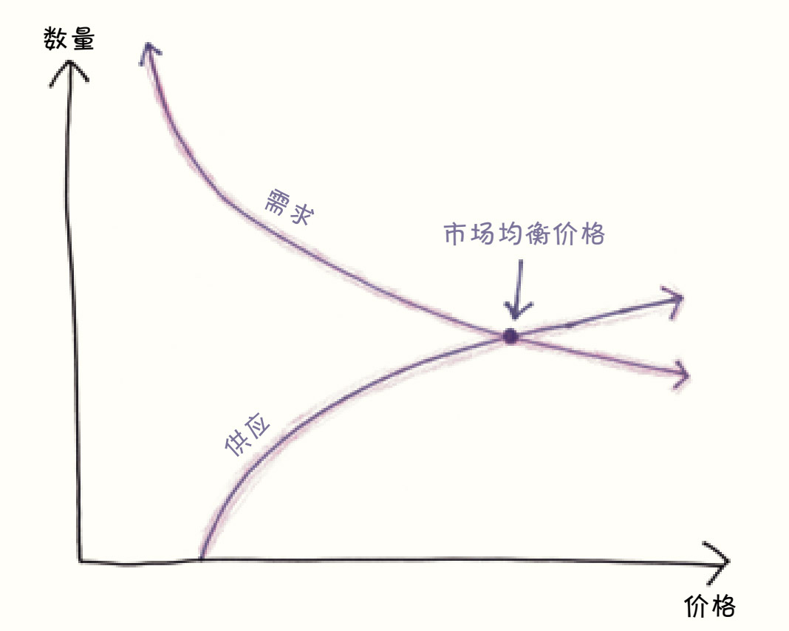
是的，在经济学上，第一杯水的价值远远超过第一粒钻石粉末。但价格并不依赖于第一个增量，甚至也不依赖于平均增量，它们依赖于最后的增量，依赖于最后一粒钻石粉末。
这是一个美妙的理论，而且就像杂志封面模特完美的皮肤一样，不由得引发人们思考：这是真的吗？生产者和消费者在做决定时，真的都在考虑边际效用吗？
嗯，不是的。用自诩独立经济学家的经济学博士约拉姆·鲍曼（Yoram Bauman）的话来说，就是“没有人会在市场这么对老板说：‘我要买个橘子，我要再买一个橘子，我还要再买一个橘子……’”8
正如进化论不能描述早期哺乳动物的进化动机一样，边际效用理论也不能完全捕捉人们的意识思维过程。它是一个抽象的经济概念，摒弃了现实的细节，提供了一个有用的简化版图谱。衡量一个理论好坏的标准主要在于它的预测能力，而边际效用理论在这一方面表现得尤为出色。我们不一定总能意识到它的存在，但在某种抽象的层面上，我们都是被边际效用支配的生物。
4. 边际革命
边际革命是经济学发展历程中的一个转折点，这个转折点使经济学正式告别了古典时代，也正是从此开始，经济学变得数学化。
最后一位伟大的古典经济学家约翰·穆勒意识到了这个发展的方向。他写道：“用数学中的等式来类比这种经济学现象再恰当不过，需求和供应……最终会相等。”9以钻石市场为例。如果需求超过供给，那么买家就会相互竞争，抬高价格；如果供给超过需求，那么卖方就会相互竞争，压低价格。穆勒一语中的：“竞争让供求相等。”
尽管穆勒的分析令人信服，但边际效用学派却认为它还不够数学化。杰文斯认为：“如果经济学要成为一门真正的科学，它就不能仅仅用类比来解决问题，还必须用真正的方程来推导。” 或者正如瓦尔拉斯所说：“当同样的事情可以用数学语言说得更简洁、更精确、更清楚的时候，我们为什么还要像约翰·穆勒那样，坚持用日常的语言，用最累赘又不准确的方式解释事情呢？”10
瓦尔拉斯沿着这条路大步向前迈进。他的标志性著作《纯粹经济学要义》（Elements of Pure Economics）是数学史上的杰作，它在明确的假设基础上，建立了一个全面的市场均衡理论。似乎是为了证明自己符合数学家超凡脱俗、远离现实的特征，他花了60页的篇幅来分析人们所能想象到的、最简单的经济现象：两个人交换两种固定数量的商品。这部作品，以史无前例的严谨和深刻的抽象性赢得了赞誉，被称为“唯一一项能与理论物理学成就媲美的经济学成就”11。瓦尔拉斯会喜欢这种恭维的。自打那天晚上和父亲散步后，他的主要目标就是把经济学提升为一门严谨的科学。
一个多世纪过去了，它仍然值得一读。我们从书中可以看到，对于瓦尔拉斯和他的追随者来说，数学的轴心是如何运转的。
无论好坏，边际革命在某种程度上使经济学科学化了，这就意味着它变得更深奥晦涩。亚当·斯密和其他古典经济学家的作品是面向受过教育的大众的，而瓦尔拉斯的读者群体则是精通数学的专家，他的远见卓识超过了那些前辈：如今的经济学博士更喜欢录取有一些经济学知识的数学专业毕业生，而不是只受过很少数学训练的经济学专业毕业生。
边际革命还为经济学留下了另一项科学遗产：新经验主义12。如今的研究人员一致认为，经济学理论不能仅仅符合直觉或逻辑，它们还必须与真实世界的观察结果相匹配。
当然，经济学仍然不是物理学。像市场这样的人造系统并不遵循严格的数学规律。在理想状态下，它们也类似于天气和流体湍流等复杂的自然现象，而这些正是数学至今仍然难以理解的系统。
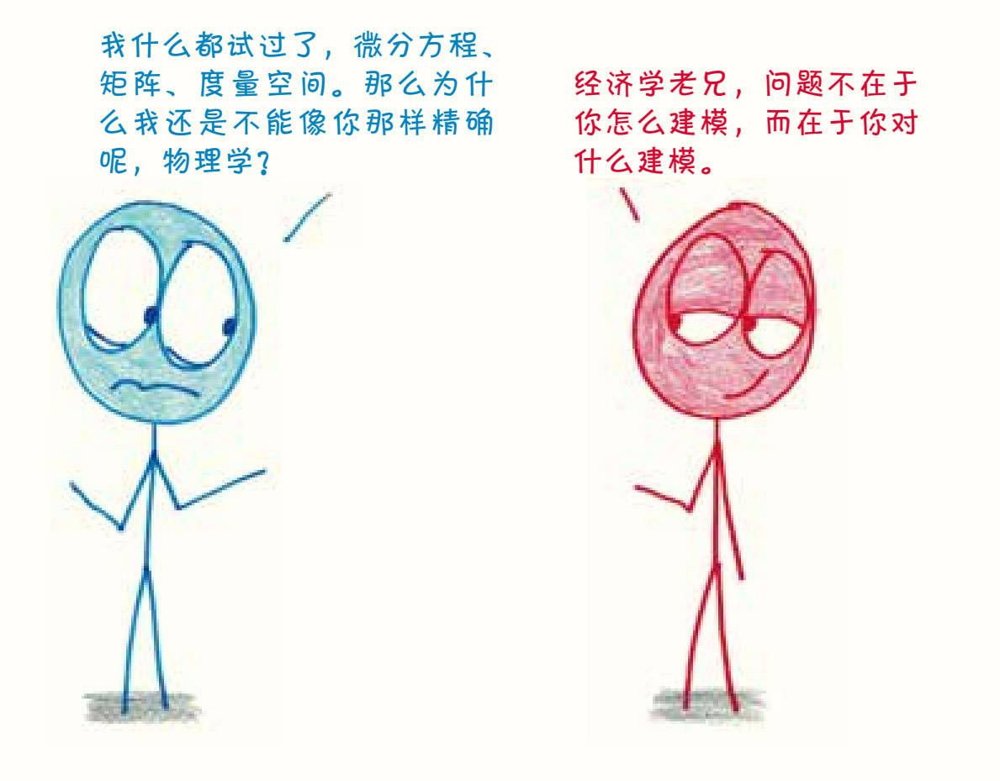
在战胜了其他思想体系的竞争对手后，边际效用理论带来了另一个变化：经济学变得就像它那些自然科学兄弟一样，与历史无关了。13在边际效用学派出现之前的几十年里，各种理论兴衰更替，不断循环。如果你愿意，可以阅读那些思想家的著作，感受他们对经济的整体看法，通过他们的语言消化他们的世界观。今天，经济学家们基本同意这些理论的基础，却不愿再去读那些原始、陈旧的公式。想为他们提供更流畅的现代版吗？倒也没必要了。边际学派使经济学家们不再那么关心历史上的思想家——最终具有讽刺意味的是，他们对边际学派本身也不怎么关心了。